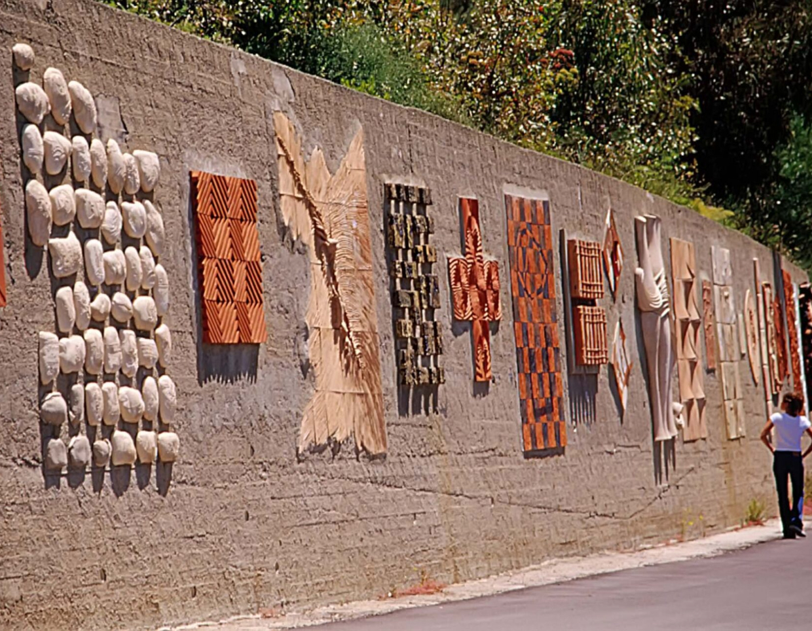

Il muro della vita
Il muro della vita è un intervento decorativo del 1993 realizzato da diversi artisti per il Parco di Fiumara d’Arte. Si trova lungo la strada provinciale 176 che collega Castel di Lucio a Mistretta, un piccolo borgo dove si trova anche l’installazione Stanza di barca d’oro di Hidetoshi Nagasawa. Antonio Presti, il fondatore del Parco Fiumara d’arte, ha invitato 40 artisti ad abbellire un muro di cemento costruito per contenere il terreno lungo la strada.
Ne Il muro della vita sono evidenti le scelte diverse adottate dagli artisti, sia per le tecniche di lavorazione e assemblaggio utilizzate che per la scelta di forme e colori. Il risultato però è perfettamente armonico come in un’orchestra ben congegnata, dove le dissonanze concorrono alla sinfonia.
Il giorno dell’inaugurazione bambini, artigiani dei paesi vicini e i ceramisti di Santo Stefano di Camastra, insieme a tutti gli artisti coinvolti, hanno seppellito piccole creazioni di argilla nel terreno dietro il muro. Questo gesto fortemente simbolico serviva a fecondare la terra, dove poi sarebbero stati anche piantati degli eucalipti.